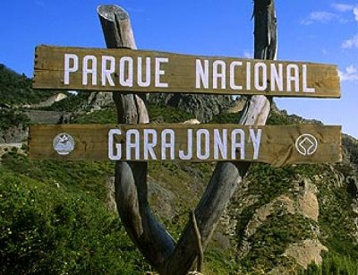
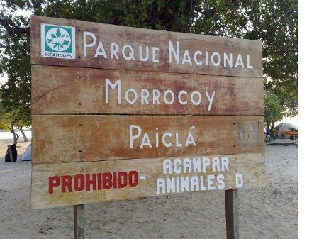

Sobre el proyecto PSMM-MdP
El objetivo a abordar del PSMM es “Sentidos en la Naturaleza”.
Verificar material PSMM en este enlace Ficha “Sentidos en la Naturaleza”.

Para el proyecto PSMM-MdP se tiene planeado colocar carteles alusivos a la conservación del ambiente, por lo cual se recomienda que cada manada (femenina – masculina) lleve al menos dos (2) carteles.
Estos carteles deben cumplir con ciertas normativas, para que sean más eficientes y adaptados a los usos en los ambientes protegidos.
- Deben ser hechos en madera (no MDF, contraenchapado, conglomerado, etc.) ya que esto garantiza que duren mas tiempo. Además que la madera es 100% biodegradable.
- Debe ser madera al natural, con una cara lijada; pero sin barnizar o cubierta de puliuretano.
- Es preferible que el mensaje sea todo en MAYÚSCULAS, con letras sin capilete (Tipo Arial, Helveticas, etc.), pintadas con esmalte blanco.
- De ser posible, antes de pintar, es preferible tallar en un bajorelieve cada letra, eso garatiza más aún su durabilidad.
- Los letreros no podrán ser clavados a árboles vivos, por lo cual también hay que tomar en cuenta esto para su colocación.
En las imágenes se muestran un par de ejemplos que pueden servir de guia